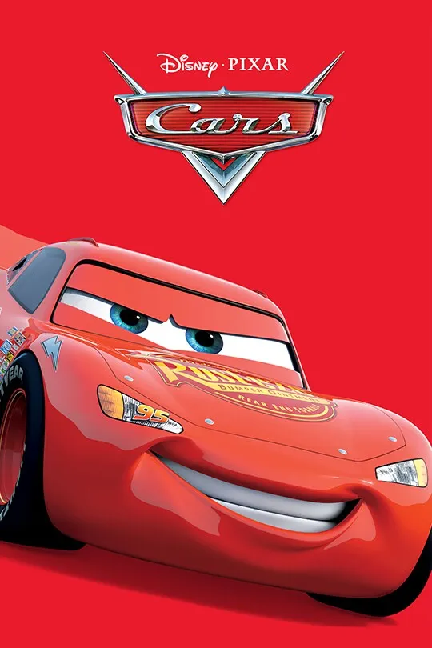
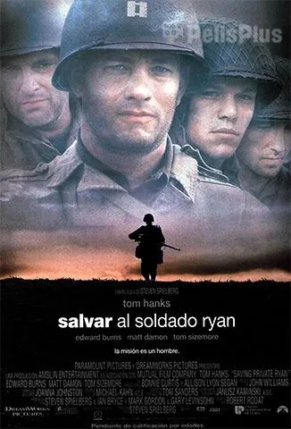

Cars
Cars es una película animada de Pixar que sigue las aventuras de Rayo McQueen, un coche de carreras que aprende importantes lecciones sobre la amistad y la humildad en un pequeño pueblo llamado Radiator Springs.
Salvando al soldado Ryan
Salvando al soldado Ryan es una película bélica dirigida por Steven Spielberg que narra la misión de un grupo de soldados para rescatar a un paracaidista cuyo hermanos han muerto en combate durante la Segunda Guerra Mundial.
The GodFather

The Godfather es una película dirigida por Francis Ford Coppola que sigue la historia de la familia Corleone, una poderosa dinastía mafiosa en Nueva York, y su lucha por mantener el poder y la influencia en el mundo del crimen organizado.